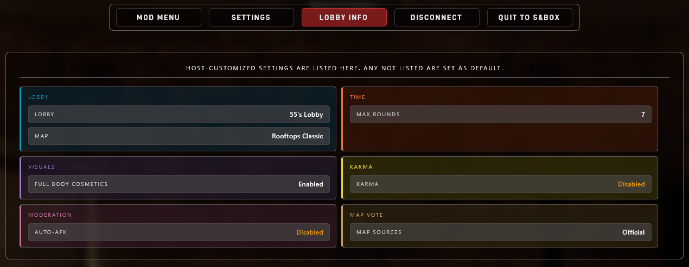

Host Settings and ConVars
Changing ConVars and Settings
If you're starting a lobby, settings can be configured from the main menu before creating it by clicking Lobby Rules. From there, you can choose between most core gameplay settings, manage map-vote sources, and save reusable rule presets.
Viewing current settings
Players can view any settings that are set to non-default values in the pause menu by clicking Lobby Info (or Server Info, if on a dedicated server).

Lobby Map Selection
A lobby host makes two separate map choices before starting the game: the map the lobby launches on and the maps that can appear in later votes.
-
The one map loaded when the lobby starts
-
The source pools used for later map votes
-
Specific package idents added to the vote candidates
Starting Map
Click the map preview on the Create Lobby screen to open Choose Starting Map. Selecting a map here changes only the map used to launch the lobby. It does not limit later votes to that map's source pool.
The Official, Verified, Compatible, size, and search controls in this browser are browse filters. They decide which maps are shown while choosing the starting map; they do not change the lobby's map-vote rules.
Vote Rules
Use Lobby Rules → Map Vote to choose the actual source pools used for later votes. The Vote Rules button in the starting-map browser opens these settings directly.
The normal source pools are Official, Verified, and Compatible. They can be combined with specific maps from the custom list. If every normal source pool is disabled, votes use only the selected custom maps.
Custom Maps
Use Manage Custom Maps under the Map Vote rules to add individual map packages. You can enter either form:
The browser also links to all map packages on sbox.game so you can browse outside the game and paste a package link or ident. The package must exist, be an unarchived map, and not be blocked by TTT.
Custom maps are added to the eligible vote candidates alongside any enabled source pools. They are not guaranteed to appear on every ballot. Maps that do not target TTT can still be added explicitly; if one has no weapon or pickup spawns, TTT will attempt to generate weapon placements automatically.
Rule presets and the starting map
Named rule presets save the custom map list, but they do not save which map should be used as the next lobby's starting map.
When a preset is created or updated, the current starting map is added to its custom vote candidates. Starting a lobby does the same. Changing the starting map later does not silently remove the previous map from the custom list.
Most rule settings are native s&box ConVars. Saved ConVars are stored in config/convar/game.json. Each value appears under a convar. key:
Value if editing the game.json file directly. Do not edit Timeout or DeleteAt.
The key in game.json includes the convar. prefix. The console command does not.
In game.json |
In server console |
|---|---|
convar.ttt_rtv_enabled |
ttt_rtv_enabled false |
Running the command in console is easiest
Setting a ConVar from the server console applies it through the game and lets the engine write any saved value back to game.json. If you edit game.json by hand, stop the server first and preserve valid JSON.
Host Settings
When do changes apply?
| Applies | Meaning |
|---|---|
| Live | The running game will read or apply the change immediately. |
| Next round | The value will change once the next round starts. |
| Round end | The value matters when round-end logic runs. |
| New votes | New map votes read the value when they are created. |
| New player | The value applies when a new player component is created. |
| Dedicated only | Dedicated server console or dedicated lifecycle behavior. |
Time
| Setting | Default | Range | Applies | Description |
|---|---|---|---|---|
Haste Modettt_haste_mode |
True |
True / False |
Next round | Enables haste mode. The public timer starts shorter and hidden time is added as players die. |
Haste Start Timettt_haste_starting_minutes |
5 |
1 to 30 |
Next round | Public round timer duration before haste overtime starts. |
Haste Time Per Deathttt_haste_minutes_per_death |
0.5 |
0 to 5 |
Next round | Minutes added to the hidden round limit each time a player dies. 0.5 is 30 seconds. |
Max Roundsttt_max_rounds |
6 |
1 to 20 |
Next round | Number of rounds before the match ends and a map vote begins. |
Round Timettt_round_time_minutes |
5 |
5 to 60 |
Next round | Round duration when haste mode is off. |
Roles
| Setting | Default | Range | Applies | Description |
|---|---|---|---|---|
Traitor Percentagettt_traitor_pct |
0.25 |
0.05 to 1 |
Next round | Fraction of round players assigned as traitors. |
Max Traitorsttt_traitor_max |
32 |
1 to 64 |
Next round | Maximum number of traitors that can be assigned. |
Detective Percentagettt_detective_pct |
0.13 |
0 to 1 |
Next round | Fraction of round players assigned as detectives when enough players are present. |
Max Detectivesttt_detective_max |
32 |
0 to 64 |
Next round | Maximum number of detectives that can be assigned. |
Detective Min Playersttt_detective_min_players |
8 |
0 to 64 |
Next round | Minimum round player count before detectives can be assigned. |
Visuals
| Setting | Default | Range | Applies | Description |
|---|---|---|---|---|
Player Cosmeticsttt_allow_player_cosmetics |
True |
True / False |
Next round | Allows players to use their s&box head, face, and neck cosmetics. |
Full Body Cosmeticsttt_allow_player_full_body_cosmetics |
False |
True / False |
Next round | Allows players to use their full s&box clothing loadout. Only matters when player cosmetics are enabled. |
Karma
| Setting | Default | Range | Applies | Description |
|---|---|---|---|---|
Karmattt_karma |
True |
True / False |
Next round | Enables karma penalties, rewards, and low-karma damage scaling. |
Auto-kickttt_karma_low_autokick |
False |
True / False |
Round end | Bans non-staff players below the low-karma threshold for 30 minutes at round end. |
Auto-Kick Thresholdttt_karma_kick_threshold |
300 |
0 to 1100 |
Round end | Karma value below which low-karma auto-kick applies. |
Starting Karmattt_karma_starting |
1000 |
0 to 1100 |
New player | Karma assigned to newly-created player components. |
Damage Thresholdttt_karma_damage_threshold |
800 |
0 to 1100 |
Live damage checks | Karma value below which outgoing damage is reduced. |
Friendly Damage Penaltyttt_karma_kill_penalty |
30 |
0 to 100 |
Round end | Friendly damage penalty scale before internal karma math. |
Round Recoveryttt_karma_round_increment |
15 |
0 to 100 |
Round end | Karma restored at round end when the player teamkilled nobody. |
Teamkill Recoveryttt_karma_round_heal_on_teamkill |
10 |
0 to 100 |
Round end | Karma restored at round end when the player killed a teammate. |
Enemy Kill Bonusttt_karma_enemybonus |
10 |
0 to 100 |
Round end | Karma awarded for killing an enemy role. |
Voice
| Setting | Default | Range | Applies | Description |
|---|---|---|---|---|
Proximity Voicettt_proximity_voice_enabled |
False |
True / False |
Live | Uses distance-limited voice for normal alive-player voice. Team voice and dead/alive filtering are separate. |
Proximity Voice Rangettt_proximity_voice_range |
800 |
200 to 5000 |
Live | Voice range in world units when proximity voice is enabled. |
Spectator
| Setting | Default | Range | Applies | Description |
|---|---|---|---|---|
Prop Possessionttt_spectator_prop_possession_enabled |
True |
True / False |
Live | Allows spectators to possess and push props while in freecam. |
Movement
| Setting | Default | Range | Applies | Description |
|---|---|---|---|---|
Bunny Hoppingbhop |
False |
True / False |
Live | Allows players to chain well-timed jumps on landing to build momentum. |
Auto Bunny Hopbhop_auto |
True |
True / False |
Live | Allows holding jump to keep jumping while bunny hopping is enabled. Only matters when bhop is enabled. |
Loot
| Setting | Default | Range | Applies | Description |
|---|---|---|---|---|
Scaled Weapon Spawnst.pickup.random_weapon_budget |
True |
True / False |
Next round | Scales random map weapon spawns by eligible player count. Only affects random weapon spawns. |
Minimum Random Weaponst.pickup.random_weapon_budget_min |
20 |
0 to 200 |
Next round | Minimum random map weapons to spawn before player-count scaling. |
Weapons Per Playert.pickup.random_weapon_budget_per_player |
4.5 |
0 to 8 |
Next round | Random map weapon target added per eligible player. |
Primary Weapon Ratiot.pickup.random_weapon_budget_primary_fraction |
0.6 |
0 to 1 |
Next round | Preferred share of budgeted random weapons that should be primaries. |
Map Vote
| Setting | Default | Range | Applies | Description |
|---|---|---|---|---|
Rock the Votettt_rtv_enabled |
True |
True / False |
Live | Allows players to start Rock the Vote map-change votes. Votekick and admin-forced map votes are unaffected. |
Vote Optionsttt_mapvote_option_count |
10 |
1 to 12 |
New votes | Maximum number of maps shown in a map vote. |
Map Poolsttt_mapvote_pool |
Official;Verified |
See below | New votes | Map source pools used for generated map vote options. |
Custom MapsMapVote.AlwaysInclude |
empty | Package idents | New votes | Specific map packages added to the eligible vote candidates. This is a lobby setting and dedicated-server config field, not a ConVar. |
Player Count Filterttt_mapvote_filter_by_players |
False |
True / False |
New votes | Prefers pool maps whose authored size range fits the current lobby size. Explicit custom maps remain eligible. |
Show Map Tagsttt_mapvote_show_tags |
True |
True / False |
New votes | Shows approved map package tags on map vote cards. |
More map/vote commands are listed below in Map and Vote Commands.
Map Vote Pools
ttt_mapvote_pool accepts Official, Verified, and AllCompatible. Use semicolons, commas, plus signs, or newlines to combine pools. All and Any are accepted shortcuts for all currently playable source pools.
The lobby UI calls MapVote.AlwaysInclude Custom Maps. These maps join the eligible candidate set; they are not pinned to every ballot. Leave ttt_mapvote_pool empty to use only the custom list.
The t.server.mapvote.* mutation commands write server_settings.json, apply to the next generated map vote, and reject changes while a map vote is already active.
MapVote.AlwaysInclude and MapVote.NeverShow are not ConVars. They live in server_settings.json because they are package-ident lists of specific maps to include or block (see Server Hosting).
Forensics
| Setting | Default | Range | Applies | Description |
|---|---|---|---|---|
Killer DNA Rangettt_killer_dna_range |
550 |
0 to 3000 |
Next round | Maximum attacker distance that can leave DNA on a body. |
Killer DNA Base Timettt_killer_dna_basetime |
100 |
0 to 600 |
Next round | Starting DNA lifetime before distance-based decay is applied. |
Require Identified Bodyttt_killer_dna_require_identified_body |
True |
True / False |
Live | Requires a corpse to be identified before its DNA can be collected. |
We don't suggest changing Forensics values
These convars are hidden by default and are still somewhat WIP. Changes won't be visible to players in your lobby or server and they might cause unexpected behavior- you have been warned!
Moderation
| Setting | Default | Range | Applies | Description |
|---|---|---|---|---|
Auto-AFKttt_auto_afk |
True |
True / False |
Live | Automatically marks idle alive players as AFK after 2.5 minutes of inactivity. |
Dedicated Lifecycle
These dedicated-server ConVars are not part of the lobby rules screen, but they are useful to operators.
| Setting | Default | Range | Applies | Description |
|---|---|---|---|---|
Empty Server Resett.dedicated.empty_reset |
True |
True / False |
Dedicated only | Reloads an empty dedicated server back to its boot map after everyone leaves. |
Empty Reset Delayt.dedicated.empty_reset.delay |
600 |
0 or higher |
Dedicated only | Delay in seconds before the empty-server reset runs. |
Map and Vote Commands
| Command | Description |
|---|---|
Rock The Votertv |
Starts a Rock the Vote map-change vote if ttt_rtv_enabled is true. Players can also type /rtv or !rtv in chat. |
Votekickvotekick PLAYER |
Queues a public votekick. Players can also type /votekick or !votekick in chat. |
Force Map Votettt_forcemapvote |
Admin/host command that starts or schedules the map-vote flow. It is not blocked by ttt_rtv_enabled. |
Change Levelchangelevel MAPIDENT |
Host-console command that changes to a map ident. Use carefully during live operation. |
Mapmap MAPIDENT |
Alias for changelevel. |
Scenescene SCENEFILE |
Host-console scene change command for scene files. Use map idents for normal server operation. |
Official Mapst.maps.official |
Dedicated-server-console-only command that prints the official map source list. |
Verified Mapst.maps.verified |
Dedicated-server-console-only command that prints the verified map source list. |
Compatible Mapst.maps.compatible |
Dedicated-server-console-only command that discovers and prints compatible unverified map packages. This can take longer than the static source-list commands. |
Print Map Vote Settingst.server.mapvote.print |
Dedicated-server-console-only command that prints current map vote source settings from server_settings.json. |
Set Map Vote Poolt.server.mapvote.pool.set Official,Verified |
Dedicated-server-console-only command that updates MapVote.Pool in server_settings.json. |
Add AlwaysIncludet.server.mapvote.alwaysinclude.add org.map |
Adds a map ident to MapVote.AlwaysInclude. |
Remove AlwaysIncludet.server.mapvote.alwaysinclude.remove org.map |
Removes a map ident from MapVote.AlwaysInclude. |
Add NeverShowt.server.mapvote.nevershow.add org.map |
Adds a map ident to MapVote.NeverShow. |
Remove NeverShowt.server.mapvote.nevershow.remove org.map |
Removes a map ident from MapVote.NeverShow. |
The t.server.mapvote.* mutation commands write server_settings.json, apply to the next generated map vote, and reject changes while a map vote is already active.
Scheduled direct map changes are available through Mod Menu → Tools → Map Tools. There is currently no console-command equivalent for scheduling a direct change at the end of the round or map.
Troubleshooting
If settings are not applying:
- Make sure
server_settings.jsonis in the correct game ident's data folder. - Make sure saved ConVars are edited under
config/convar/game.jsonor your host's ConVar panel. - Restart the dedicated server after editing files by hand.
- Check that your JSON is valid.
- In
game.json, edit onlyValue. - Check the server console for
[server.settings],[lobby.settings] applied, and[server.launch]messages.
Example Success Messages
Successful load:
[server.settings] loaded path=server_settings.json schema=3 lobby=True map_pool=Official;Verified always_include=0 never_show=0
Applied settings:
[lobby.settings] applied source=dedicated launch_map=thieves.rooftops native_map=thieves.rooftops public, 6 rounds, 5m, prep 20s, haste 5m +0.5m/death, open catalog, official + verified pool, 10 vote maps